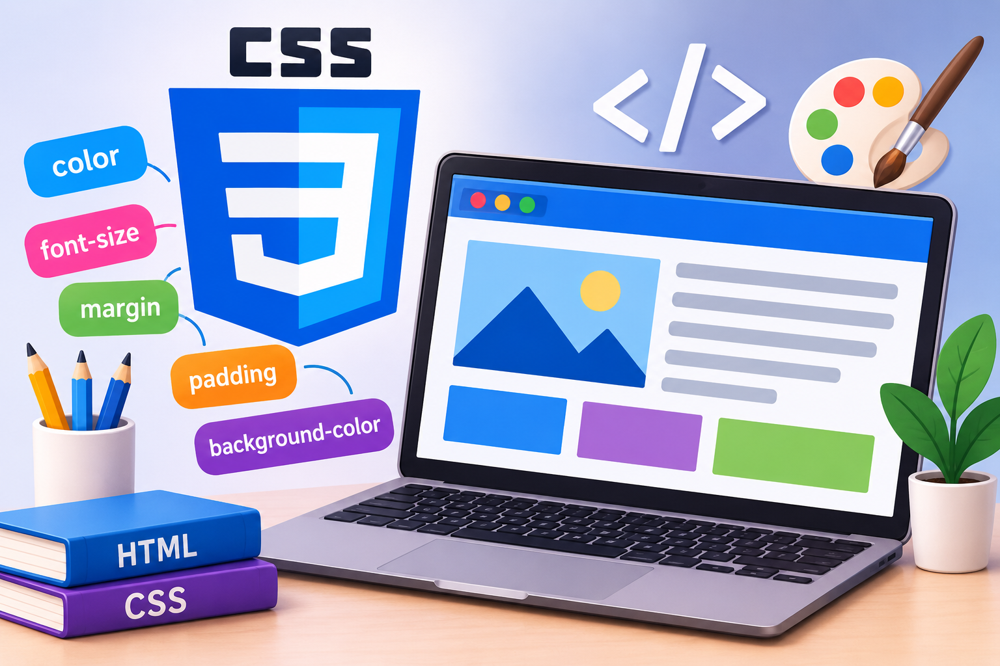
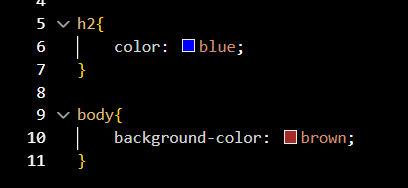
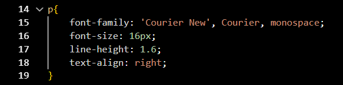
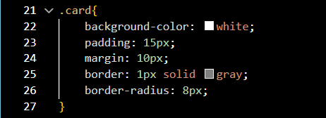

إعداد الطالبة: جنى مصطفى محمود محمد محمود علي السيد
الرقم الجامعي: 2500938
اسم المقرر: تطبيقات الإنترنت والمنصات الإلكترونية
إشراف الدكتور: مها زغلول
العام الدراسي: 2026 - 2027
تعد مواقع الويب في الوقت الحاضر من أهم الوسائل للحصول على المعلومات والتواصل، حيث يتم الاعتماد عليها بشكل كبير في مختلف المجالات مثل التعليم والتجارة والعمل والترفيه.
إن نجاح أي موقع إلكتروني لا يعتمد فقط على جودة المحتوى الذي يقدمه، بل يعتمد بدرجة كبيرة على طريقة عرض هذا المحتوى وتنظيمه بشكل بسيط وجذاب يسهل على المستخدم تصفحه.
وتعتبر لغة CSS من أهم الأدوات المستخدمة في تصميم صفحات الويب، فهي اللغة المسؤولة عن التحكم في المظهر الخارجي للصفحة، مثل تحديد ألوان النصوص والخلفيات ونوع الخط وحجمه، وتنظيم المسافات وترتيب العناصر داخل الصفحة.
ويهدف هذا التقرير إلى بيان دور لغة CSS في تحسين مظهر صفحات الويب، من خلال توضيح كيفية استخدامها في تغيير الألوان والخطوط وتنسيق العناصر، مع ذكر أمثلة توضيحية تبين أهميتها في جعل المواقع أكثر جاذبية وسهولة في الاستخدام.

تعد لغة CSS هي الأداة الأساسية المستخدمة للتحكم في المظهر العام لصفحات الويب، وهي اختصار لمصطلح Cascading Style Sheets والذي يعني أوراق الأنماط المتتالية.
تعتبر كل من لغة HTML ولغة CSS لغتين يكمل كل منهما الآخر، حيث أن:
تتيح لغة CSS إمكانية تغيير ألوان النصوص والخلفيات، وهو ما يساعد على إبراز المعلومات المهمة ويجعل شكل الصفحة أكثر جاذبية.
ومن أهم الخصائص المستخدمة في تغيير الألوان:
color: تُستخدم لتغيير لون النص.background-color: تُستخدم لتغيير لون الخلفية.
تساعد لغة CSS على التحكم في شكل النصوص داخل صفحات الويب، مما يجعل عملية القراءة أكثر وضوحاً وتنظيماً. ومن أهم خصائص تنسيق الخطوط:
font-family: لتحديد نوع الخط.font-size: لتحديد حجم الخط.font-weight: للتحكم في سمك الخط.text-align: لتحديد محاذاة النص.line-height: لتحديد المسافة بين الأسطر.
لا يقتصر دور لغة CSS على تغيير الألوان والخطوط فقط، بل يمكن استخدامها أيضاً لتنسيق العناصر المختلفة داخل الصفحة مثل الأزرار والصناديق والصور. ومن أهم خصائص المسافات:
margin: لتحديد المسافة الخارجية حول العنصر.padding: لتحديد المسافة الداخلية بين محتوى العنصر وحدوده.border: لإضافة حدود حول العنصر.border-radius: لجعل زوايا العنصر مستديرة.
| خاصية CSS | الوظيفة الاستخدامية | مثال استخدامي |
|---|---|---|
color |
تغيير لون النص | color: blue; |
background-color |
تغيير لون الخلفية | background-color: brown; |
font-family |
تحديد نوع الخط | font-family: 'Courier New'; |
padding |
تحديد المسافة الداخلية للعنصر | padding: 15px; |
border-radius |
جعل زوايا العنصر مستديرة | border-radius: 8px; |
تساهم لغة CSS في جعل الموقع أكثر تنظيماً وجاذبية، كما أنها تسهل على المستخدم الوصول إلى المعلومات المهمة. ويمكن استخدامها لإنشاء تصميمات مرنة تتناسب مع جميع أحجام الشاشات المختلفة مثل الهواتف المحمولة وأجهزة الكمبيوتر.
في نهاية هذا التقرير يتضح أن لغة CSS لها أهمية كبيرة في تصميم صفحات الويب وتنسيقها حيث تتيح للمطورين التحكم في تغيير الألوان والخطوط والخلفيات والمسافات. ولذلك يعد تعلم أساسيات لغة CSS خطوة مهمة لكل من يرغب في تعلم تصميم وتطوير مواقع الويب.